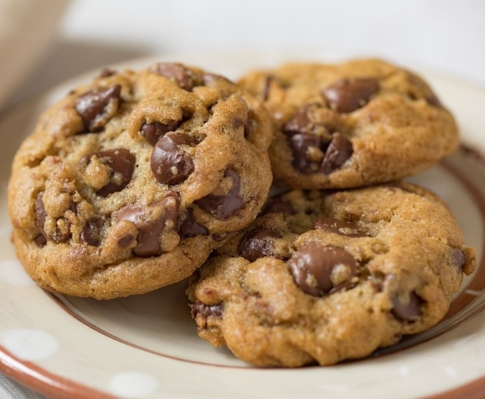

Galletas con chispas de chocolate

Ingredientes
- 1 1/2 Barras de Mantequilla sin sal a temperatura ambiente (135 g)
- 1 Lata de Leche Condensada LA LECHERA®
- 1 Cucharadita de Esencia de vainilla
- 1 Huevo
- 2 1/2 Tazas de Harina de trigo
- 1 Cucharadita de Polvo para hornear
- 1 Taza de Chocolate semiamargo en chispas
Cómo hacer galletas con chispas de chocolate:
- Horno precalentado a 180 °C.
- Bate la mantequilla hasta que esponje, agrega la Leche Condensada LA LECHERA®, el extracto de vainilla y el huevo bate hasta integrar completamente,
añade poco a poco la harina junto con el polvo para hornear previamente pasados por un colador y por último las chispas de chocolate. Refrigera la masa por 30 minutos.
- En una charola cubierta con papel encerado coloca un poco de la mezcla anterior con ayuda de una cuchara y aplana ligeramente.
- Hornea a 180 °C por 15 minutos o hasta que las orillas estén doradas. Retira del horno y deja enfriar. Ofrece.